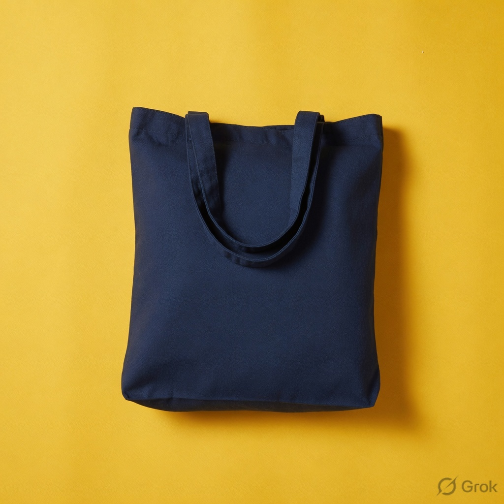
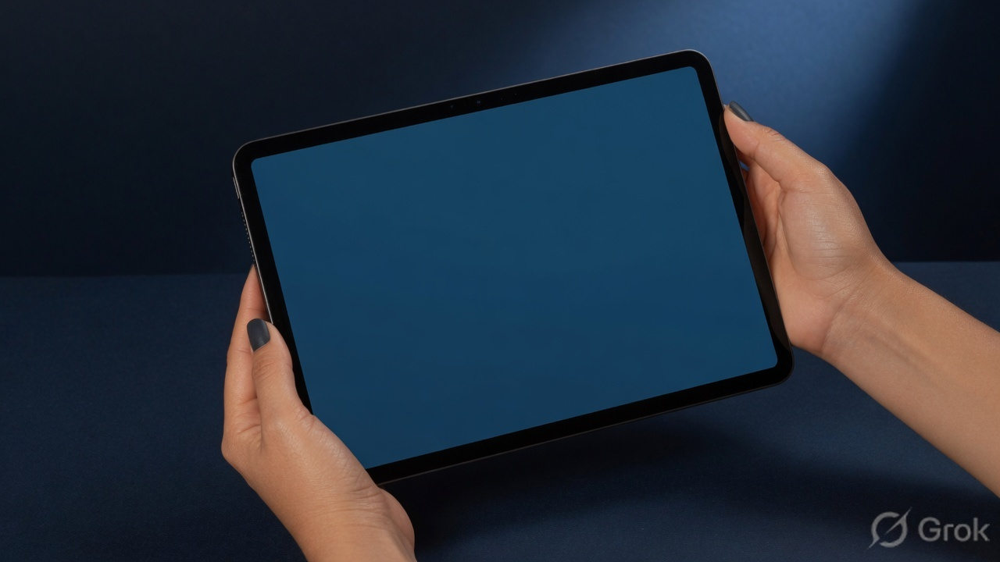

Clear
State the bay, the ETA, the handoff. Skip “seamless” and “next-gen.”
Brand identity system · 2026
Lumenport is a fictional import and logistics brand. Deep ocean blues and signal gold mark routes, ports, and the handoff between systems — built as a complete visual identity specimen.
Primary lockup, construction, applications, palette — the working face of Lumenport.


Mark
The mark is an original geometric path: a solid L-stem, a route leg, and a square node — reading as port, path, and signal. Clear space equals half the mark height on every side.
Color
Four blues for structure and depth. Two golds for action and light. Never invert gold fields with low-contrast navy text at small sizes.
#014A73
#165672
#2B6377
#3C7382
#D89A00
#F3B200
Typography
Space Grotesk carries the wordmark and titles. Plus Jakarta Sans handles long-form and UI.
Lumenport routes trade.
Clear documentation for handoffs, bay schedules, and partner portals — written for operators, not slogans.
Applications
Same mark language across physical and digital touchpoints — gold on navy, navy on gold.
Voice
Operators first. Short sentences. Numbers over adjectives.
State the bay, the ETA, the handoff. Skip “seamless” and “next-gen.”
Confidence without hype. We move freight and data — not vibes.
One primary action per surface. Gold is the call — never decoration alone.
Staggered node grid derived from the mark’s square terminal. Use on tags, packing inserts, and empty states — gold nodes on ocean or navy only.
Usage